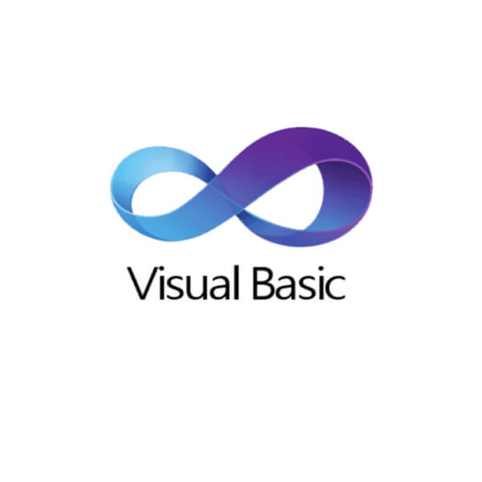
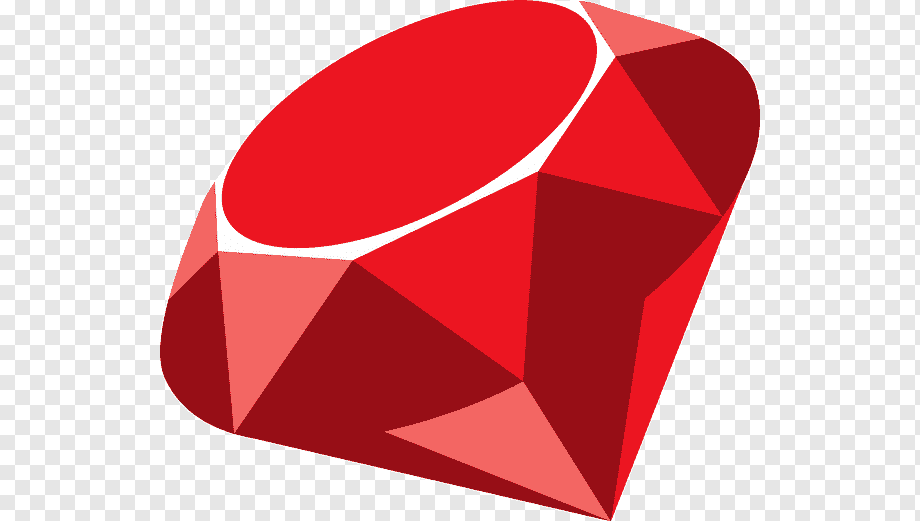

Java
 La plataforma Java es capaz de ejecutar aplicaciones desarrolladas usando el lenguaje de programación Java u otros lenguajes que compilen a bytecode y un conjunto de herramientas de desarrollo.
La plataforma Java es capaz de ejecutar aplicaciones desarrolladas usando el lenguaje de programación Java u otros lenguajes que compilen a bytecode y un conjunto de herramientas de desarrollo.
C
 C es un lenguaje de programación de propósito general, es un lenguaje orientado a la implementación de sistemas operativos, concretamente Unix.
C es un lenguaje de programación de propósito general, es un lenguaje orientado a la implementación de sistemas operativos, concretamente Unix.
Python
 Python es un lenguaje de programación interpretado cuya filosofía hace hincapié en la legibilidad de su código. Se trata de un lenguaje de programación multiparadigma, ya que soporta orientación a objetos, programación imperativa y, en menor medida, programación funcional.
Python es un lenguaje de programación interpretado cuya filosofía hace hincapié en la legibilidad de su código. Se trata de un lenguaje de programación multiparadigma, ya que soporta orientación a objetos, programación imperativa y, en menor medida, programación funcional.
CSharp
 C# es un lenguaje de programación multiparadigma, C# es uno de los lenguajes de programación diseñados para la infraestructura de lenguaje común.
C# es un lenguaje de programación multiparadigma, C# es uno de los lenguajes de programación diseñados para la infraestructura de lenguaje común.
C++
 C++ es un lenguaje de programación. La intención de su creación fue extender al lenguaje de programación C mecanismos que permiten la manipulación de objetos. En ese sentido, desde el punto de vista de los lenguajes orientados a objetos, C++ es un lenguaje híbrido.
C++ es un lenguaje de programación. La intención de su creación fue extender al lenguaje de programación C mecanismos que permiten la manipulación de objetos. En ese sentido, desde el punto de vista de los lenguajes orientados a objetos, C++ es un lenguaje híbrido.
Visual Basic  Visual Basic es un lenguaje de programación dirigido por eventos. Este lenguaje de programación es un dialecto de BASIC, con importantes agregados.
Javascript
 JavaScript es un lenguaje de programación interpretado. Se define como orientado a objetos, basado en prototipos, imperativo, débilmente tipado y dinámico.
JavaScript es un lenguaje de programación interpretado. Se define como orientado a objetos, basado en prototipos, imperativo, débilmente tipado y dinámico.
PHP
 PHP es un lenguaje de programación de uso general que se adapta especialmente al desarrollo web. En la actualidad, la implementación de referencia de PHP es producida por The PHP Group.
PHP es un lenguaje de programación de uso general que se adapta especialmente al desarrollo web. En la actualidad, la implementación de referencia de PHP es producida por The PHP Group.
Swift
 Swift es un lenguaje de programación multiparadigma creado por Apple enfocado en el desarrollo de aplicaciones para iOS y macOS. Fue presentado en la WWDC 2014 y está diseñado para integrarse con los Frameworks Cocoa y Cocoa Touch; puede usar cualquier biblioteca programada en Objective-C y llamar a funciones de C.
Swift es un lenguaje de programación multiparadigma creado por Apple enfocado en el desarrollo de aplicaciones para iOS y macOS. Fue presentado en la WWDC 2014 y está diseñado para integrarse con los Frameworks Cocoa y Cocoa Touch; puede usar cualquier biblioteca programada en Objective-C y llamar a funciones de C.
SQL
 SQL es un lenguaje de dominio específico utilizado en programación, diseñado para administrar, y recuperar información de sistemas de gestión de bases de datos relacionales.
SQL es un lenguaje de dominio específico utilizado en programación, diseñado para administrar, y recuperar información de sistemas de gestión de bases de datos relacionales.
Ruby  Ruby es un lenguaje de programación interpretado, reflexivo y orientado a objetos, creado por el programador japonés Yukihiro "Matz" Matsumoto, quien comenzó a trabajar en Ruby en 1993, y lo presentó públicamente en 1995.